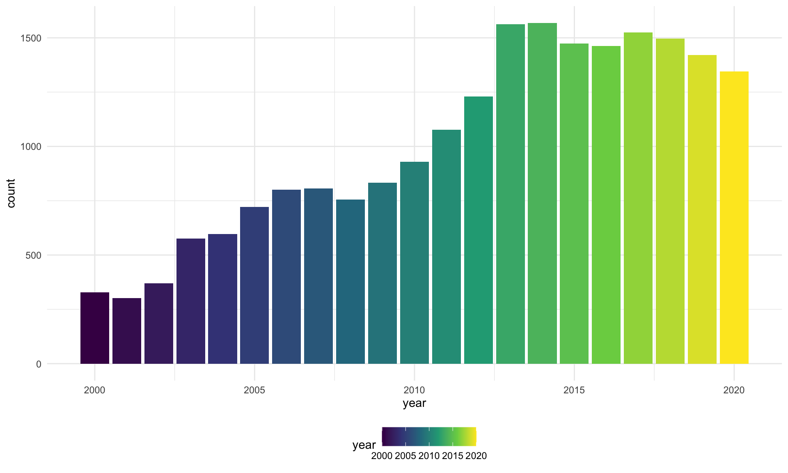
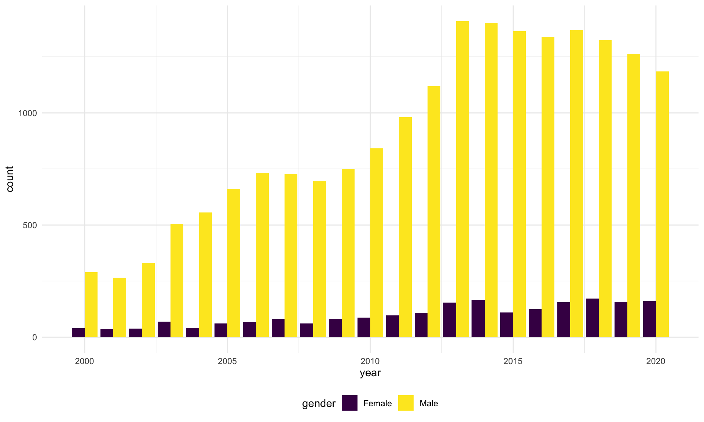
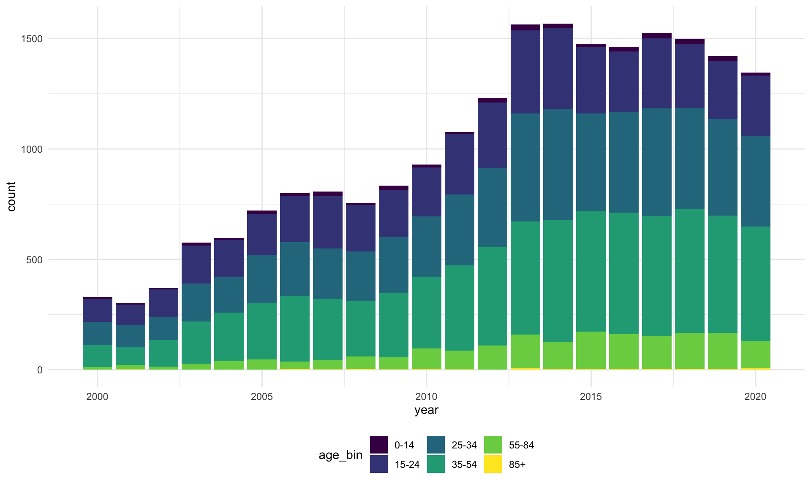
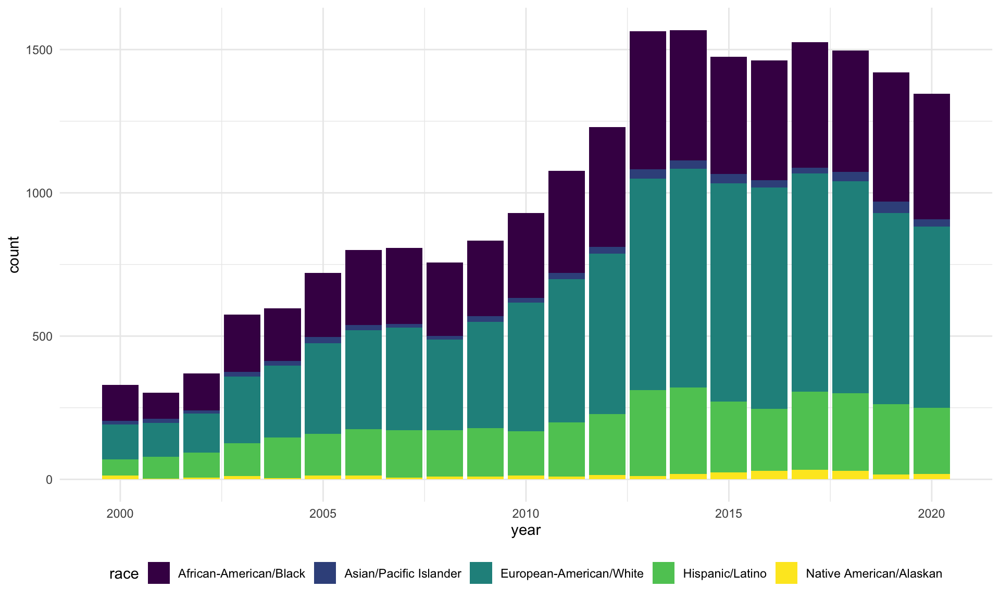
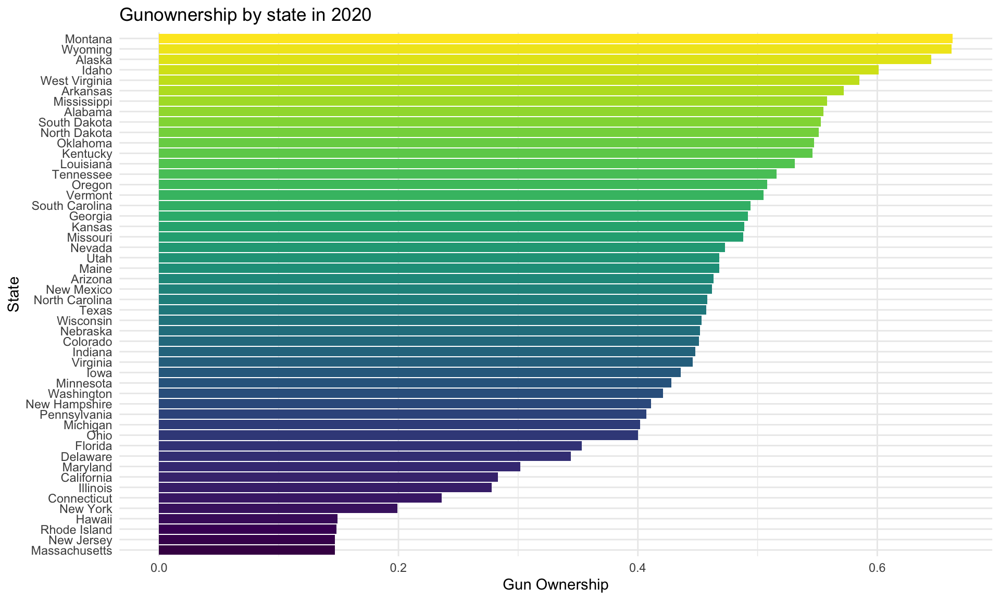
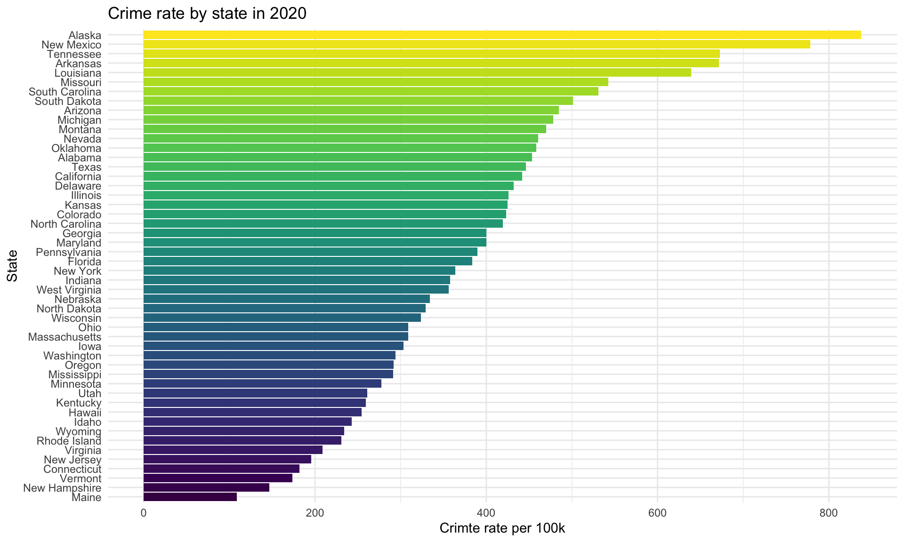
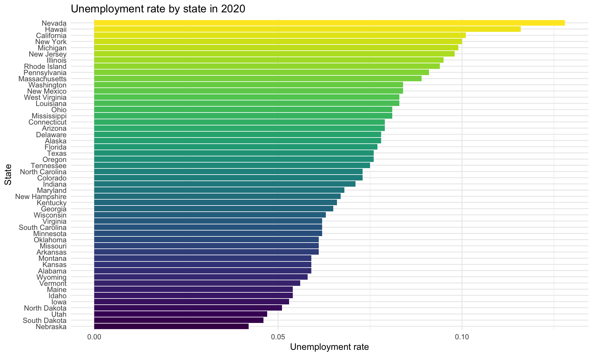
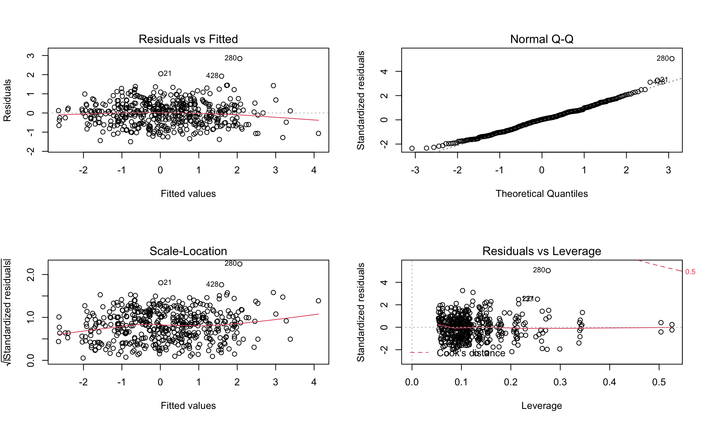

data_regression
Import data
main_df <-
read_csv("./data/maindata.csv")
main_df <-
main_df %>%
mutate(year = lubridate::year(date_of_death)) %>%
filter(year != 2021)pop_stat <-
read_csv("data/census.csv")gun_owner <-
read_csv("data/Gun Ownership by State 2021.csv") %>%
janitor::clean_names() %>%
select(-total_guns)crime_stat <-
read_excel("data/reported-violent-crime-rate-in-the-us-2020-by-state.xlsx",
sheet = "Data",
range = "B5:C57") %>%
rename(state = 1, crime_per_10e6 = 2) %>%
filter(state != "United States") %>%
mutate(crime_per_10e6 = as.numeric(crime_per_10e6))unempolyment_stat <-
read_excel("data/state-unemployment-rate-in-the-us-2020.xlsx",
sheet = "Data",
range = "B5:C56") %>%
rename(state = 1, unemploy_rate = 2) %>%
mutate(unemploy_rate = as.numeric(unemploy_rate)/100)Exploratory data analysis
State
main_df %>%
group_by(year) %>%
summarize(count = n()) %>%
ggplot(aes(x = year, y = count, fill = year)) +
geom_bar(stat = "identity")
Sex
main_df %>%
group_by(year, gender) %>%
summarize(count = n()) %>%
ggplot(aes(x = year, y = count, fill = gender)) +
geom_bar(stat = "identity", position = position_dodge())
Age group
main_df %>%
group_by(year, age_bin) %>%
summarize(count = n()) %>%
ggplot(aes(x = year, y = count, fill = age_bin)) +
geom_bar(stat = "identity")
Race
main_df %>%
group_by(year, race) %>%
summarize(count = n()) %>%
ggplot(aes(x = year, y = count, fill = race)) +
geom_bar(stat = "identity")
Gunownership by state in 2020
gun_owner %>%
mutate(state = fct_reorder(state, gun_ownership)) %>%
ggplot(aes(x = gun_ownership, y = state, fill = state)) +
geom_bar(stat = "identity", show.legend = FALSE) +
labs(
title = "Gunownership by state in 2020",
x = "Gun Ownership",
y = "State"
)
Crime rate by state in 2020
crime_stat %>%
filter(state != "District of Columbia") %>%
mutate(state = fct_reorder(state, crime_per_10e6)) %>%
ggplot(aes(x = crime_per_10e6, y = state, fill = state)) +
geom_bar(stat = "identity", show.legend = FALSE) +
labs(
title = "Crime rate by state in 2020",
x = "Crimte rate per 100k",
y = "State"
)
Unemployment rate by state in 2020
unempolyment_stat %>%
filter(state != "District of Columbia") %>%
mutate(state = fct_reorder(state, unemploy_rate)) %>%
ggplot(aes(x = unemploy_rate, y = state, fill = state)) +
geom_bar(stat = "identity", show.legend = FALSE) +
labs(
title = "Unemployment rate by state in 2020",
x = "Unemployment rate",
y = "State"
)
Statistical analysis
Distribution of the target variable
reg_df1 <-
main_df %>%
group_by(year, state, age_bin, gender, race) %>%
summarize(count = n()) %>%
filter(year %in% c(2010:2020), state != "DC") %>%
left_join(pop_stat, by = c("year", "state", "age_bin", "gender", "race")) %>%
mutate(innocent_kill_per100k = count / population * 10^5)
# Find distribution of the target variable `innocent_kill_per100k`
reg_df1 %>%
ggplot(aes(x = innocent_kill_per100k)) +
geom_density(color = "dodgerblue1", fill = "skyblue2") +
geom_vline(xintercept = mean(reg_df1$innocent_kill_per100k), linetype = "dotted")
# After transformation
reg_df1 %>%
ggplot(aes(x = log(innocent_kill_per100k))) +
geom_density(color = "dodgerblue1", fill = "skyblue2") +
geom_vline(xintercept = mean(log(reg_df1$innocent_kill_per100k)), linetype = "dotted")
Modeling
# Model 1 -- across all years in database
# Fit a model
fit1 <- lm(log(innocent_kill_per100k) ~ year + state + age_bin + gender + race, data = reg_df1)
# Model diagnosis
par(mfrow = c(2, 2))
plot(fit1)
# Model 2 -- year 2020
# Join data
pop_gun_crime_unemply <-
gun_owner %>%
left_join(crime_stat, by = "state") %>%
left_join(unempolyment_stat, by = "state") %>%
mutate(state = state.abb[match(state, state.name)]) %>%
select(state, everything())
reg_df2 <-
reg_df1 %>%
filter(year == 2020) %>%
left_join(pop_gun_crime_unemply, by = "state") %>%
select(2:5, 8:11)
# Fit a model
fit2 <- lm(log(innocent_kill_per100k) ~ state + age_bin +
gender + race + gun_ownership + crime_per_10e6 + unemploy_rate,
data = reg_df2)
# Model diagnosis
par(mfrow = c(2, 2))
plot(fit2)